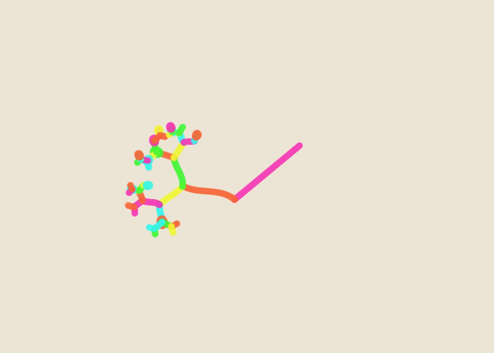

01
Growth Systems — Study 01
Growth Systems generative marker artwork using seed AA-20261009-01-07665, 88% golden-ratio adherence, paint pen and the neon palette.
- Seed
- AA-20261009-01-07665
- Series
- Growth Systems
- Format
- Landscape · 1400 × 1000
- φ adherence
- 88%
- Pen
- paint
- Palette
- neon